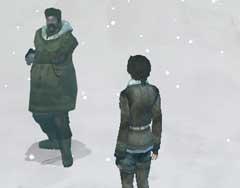

| 概要 | 地図 |
| 淡いヒント集 | ヒント集 | 的確なヒント集 |
| 攻略最短ルート |
| 場所選択に戻る |
雪山

機関車を動かすには、客車と操縦室を切り離さなければならない。切り離すのには、貴重品室でオルゴールが置いてあった柱の下を見ればよい。 画像のように、4つのスイッチがあり、これを操作し、棒を全て外せば客車も切り離せる。時間は十分にあるので、色々と試してみよう。 
機関車が移動した先には、線路がなくなっていた。もう、ここが旅の終点なのだろうか? あなたは、色々な調査をしたところ、ハンスを連れ去った兄弟の兄の方が丘の上へ移動したことが分かった。 しかし、丘へ続く一本道は、凍り付いていてとても上ることはできない。

そこで、丘の上へ移動する前に別のことを調べてみよう。ハンスを連れ去った兄弟の弟は、何かを恐れているだろう。彼は「精霊」がいると言っているはずだ。 しかし、実際には精霊などはいない。彼が恐れている”精霊の声”は、丘の横にあるフクロウの形をした柱から出ているのだ。 そこで、スノーモービルに積んである「毛布」をフクロウの口へ詰め込んでみよう。”精霊の声”がなくなったと彼は喜び、立ち去ってくれるだろう。 
スノーモービルのあった場所に、「カンジキ」が置いてある。これを付けて丘を登ってみよう。すると、兄の方が現れてあなたを威嚇してくるはずだ。 身動きはとれないので、ここは機関車にいるオスカーを利用しよう。彼に携帯電話で連絡を取ることで、オスカーが兄の気を引きつけてくれる。 兄が機関車の方を向いているスキに、周囲を調べてみよう。象牙のナイフと、象牙を大量に乗せたソリがあるはずだ。ここにある「象牙のナイフ」を使い、ソリをつないであるロープを切ってみよう。 きっと何かが起こるはずだ。
| << 前へ |
|
| 場所選択に戻る |
| 概要 | 地図 |
| 淡いヒント集 | ヒント集 | 的確なヒント集 |
| 攻略最短ルート |
Syberia II
| 目次へ戻る | ページの上部へ |